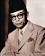

Moh. Hatta
Drs. Mohammad Hatta (né: Mohammad Athar) (12 Agustus 1902 – 14 Maret 1980), akrab oleh teman seperjuangannya dengan sapaan Bung Hatta, adalah seorang negarawan, konseptor dan ekonom yang berperan banyak dalam perjuangan kemerdekaan Indonesia. Ia sebagai Proklamator Kemerdekaan bersama Soekarno memainkan peranan sentral dalam perjuangan kemerdekaan Indonesia dari penjajahan Belanda sekaligus memproklamirkannya pada 17 Agustus 1945. Sehari setelahnya, Hatta menjabat Wakil Presiden Republik Indonesia pertama dalam sejarah. Ia dikenal akan komitmennya terhadap sistem demokrasi dengan mengeluarkan Maklumat X yang menjadi tonggak awal demokrasi di Indonesia. Pada 1956, ia mundur dari jabatan wakil presiden.
Kiprahnya di pemerintahan Indonesia tidak hanya duduk sebagai wakil presiden, ia pernah menjabat sebagai Perdana Menteri dalam Kabinet Hatta I, Hatta II, dan RIS. Di bidang ekonomi, pemikiran dan sumbangsihnya terhadap perkembangan koperasi membuat ia dijuluki sebagai Bapak Koperasi.
Hatta meninggal pada 1980 dan jenazahnya dimakamkan di TPU Tanah Kusir, Jakarta. Pemerintah Indonesia menetapkannya sebagai salah seorang Pahlawan Proklamator Kemerdekaan pada tanggal 23 Oktober 1986 melalui Keppres nomor 081/TK/1986. Namanya bersanding dengan Soekarno sebagai Dwi-Tunggal dan disematkan pada Bandar Udara Internasional Soekarno-Hatta. Di Belanda, namanya diabadikan sebagai nama jalan di kawasan perumahan Zuiderpolder, Haarlem.
Mohammad Hatta lahir dari pasangan Muhammad Djamil dan Siti Saleha yang berasal dari Minangkabau. Ayahnya merupakan seorang keturunan ulama Naqsyabandiyah di Batuhampar, dekat Payakumbuh, Sumatera Barat dan ibunya berasal dari keluarga pedagang di Bukittinggi. Ia lahir dengan nama Muhammad Athar pada tanggal 12 Agustus 1902. Namanya, Athar berasal dari bahasa Arab, yang berarti "harum". Athar lahir sebagai anak kedua, setelah Rafiah yang lahir pada tahun 1900. Sejak kecil, ia telah dididik dan dibesarkan dalam lingkungan keluarga yang taat melaksanakan ajaran agama Islam. Kakeknya dari pihak ayah, Abdurrahman Batuhampar dikenal sebagai ulama pendiri Surau Batuhampar, sedikit dari surau yang bertahan pasca-Perang Padri. Sementara itu, ibunya berasal dari keturunan pedagang. Beberapa orang mamaknya adalah pengusaha besar di Jakarta.
Ayahnya meninggal pada saat ia masih berumur tujuh bulan. Setelah kematian ayahnya, ibunya menikah dengan Agus Haji Ning, seorang pedagang dari Palembang. Haji Ning sering berhubungan dagang dengan Ilyas Bagindo Marah, kakeknya dari pihak ibu. Perkawinan Siti Saleha dengan Haji Ning melahirkan empat orang anak, yang semuanya adalah perempuan.